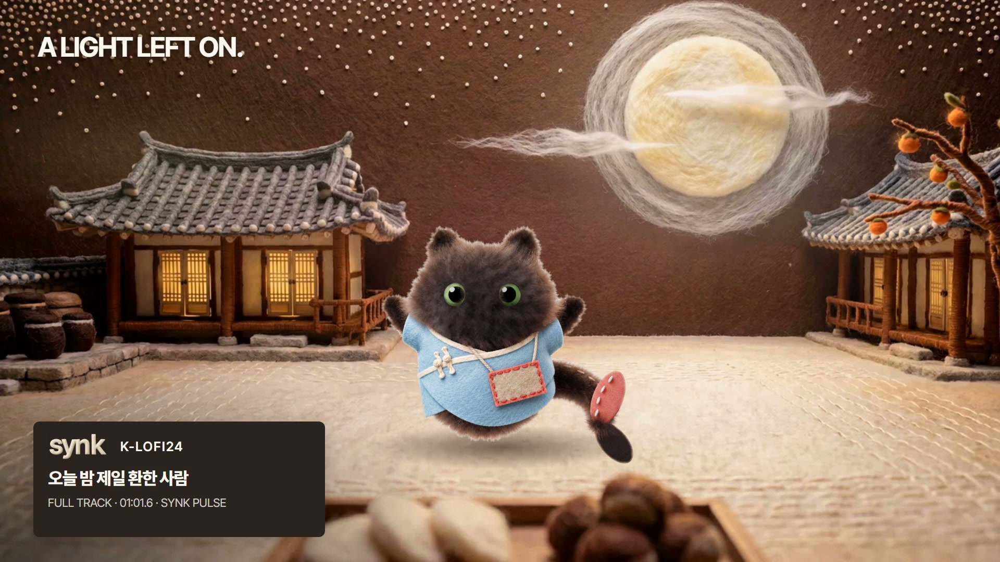

내일까지? 몇 시까지?
다시 묻고 뜻을 확인하는 한국어 · 한몽 자료와 직접 작성
새 원고 · 사람 원어민 감수 전
실물 · 문안 · 제공자료
2026.09.10 / NEXT EDITION
LAB은 내 말로 확인하는 경험을, SHIFT는 달라진 일을 다시 설계하는 방법을, PULSE는 한 곡을, SYNK는 완성 뒤의 기준을 건넵니다.
다시 묻고 뜻을 확인하는 한국어 · 한몽 자료와 직접 작성
새 원고 · 사람 원어민 감수 전
실물 · 문안 · 제공자료
사용처가 바뀌었을 때 제안을 고치는 실습 · 완성 예시와 편집 원본
신규 제작 · 가상 교육용 예시
실물 · 문안 · 제공자료
오늘 밤 제일 환한 사람 · 61.6초 전곡 감상
전곡 영상 재사용 · 새 소개 카드와 문안
실물 · 문안 · 제공자료
결과물을 쓰는 사람에게 건네는 네 가지 · 실제 제작 방식
신규 제작 · 본체 계정 개설 미확인
실물 · 문안 · 제공자료